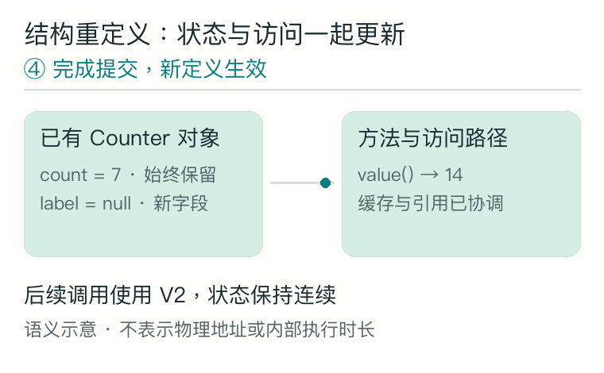
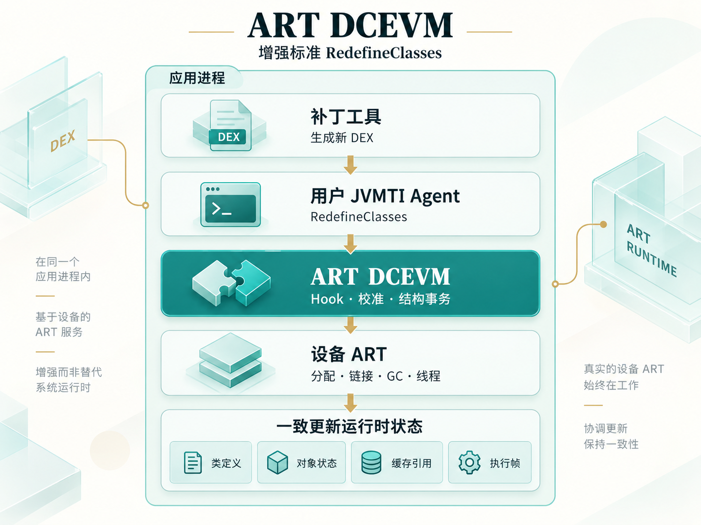
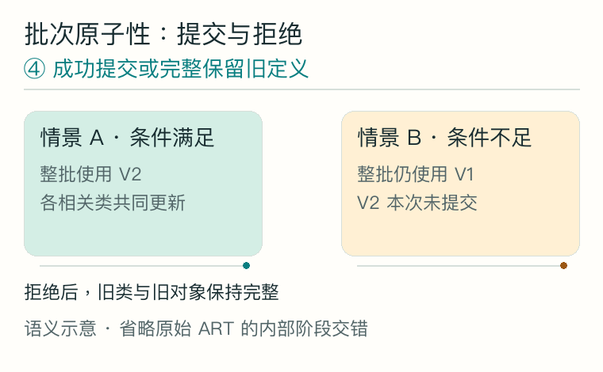
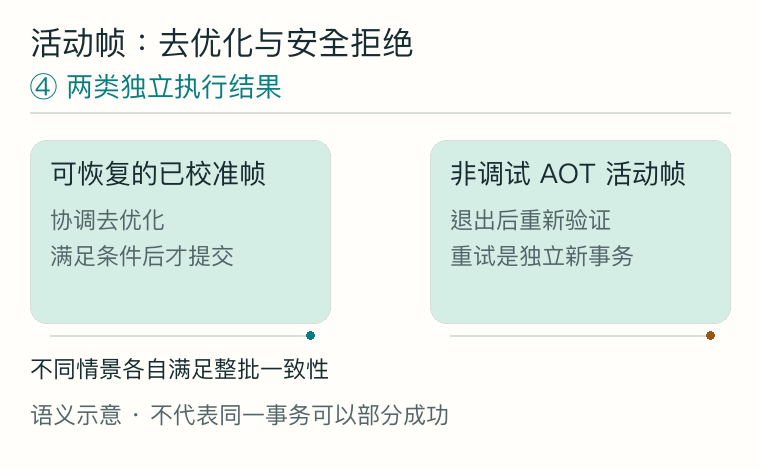
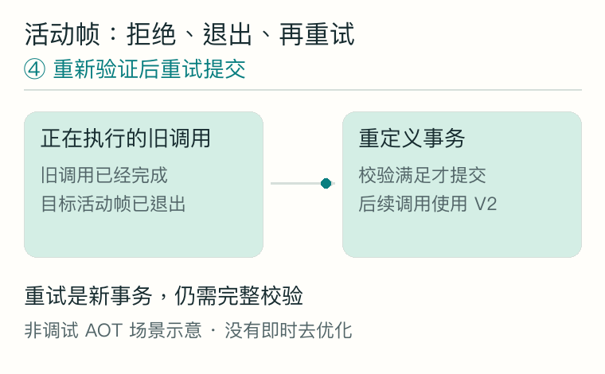

现在的 JVMTI 痛点，我的库做了什么？
通过 JVMTI，Native Agent 可以对正在运行的应用发起类重定义。对于开发工具来说，这意味着修改代码后，应用有机会继续运行，当前页面、会话和对象状态可以保留下来。然而，代码迭代经常超出“修改方法体”的范围。
给对象加一个字段、删除旧方法、调整方法签名，或者换一个父类，都会改变类的结构。原有标准 RedefineClasses 对这些变化有严格约束；ART 提供的独立结构扩展也有自己的能力边界。一次正常的代码重构，可能就让原本顺畅的热替换流程停下来，回到重新构建和启动应用。
真正困难的是结构变化之后的运行时一致性
新增字段后，已有对象需要什么初值？删除方法后，缓存的反射对象和 JNI ID 是否还能访问它？换了父类后，旧接收者还符合调用要求吗？被 JIT 内联进机器码的旧方法又如何处理？这些问题必须在提交前后同时成立，才能把结构变化纳入可用的重定义能力。
ART DCEVM：增强 ART JVMTI 的 RedefineClasses，让标准入口承载更多类变化。
我把增强能力放在 ART 的重定义处理链中。调用方依然使用自己的 jvmtiEnv*，提交标准的 jvmtiClassDefinition[] 并接收 JVMTI 错误码。库在已适配的运行时上处理成员变化、对象状态迁移、缓存与旧引用、活动帧以及整批提交。
| 代码变化 | 库提供的增强 | 对应运行语义 |
|---|---|---|
| 字段、方法、构造器增删 | 结构重定义与成员退役 | 兼容字段延续已有值，新字段为零值或 null |
| 类型、签名、static / 实例变化 | 更新成员结构与访问路径 | 相关变化按旧成员退役、新成员创建处理 |
| 访问权限与修饰符变化 | 处理已覆盖的 final、volatile、synchronized、abstract 等语义 | 检查存活对象、已加载子类与旧权限路径 |
| 父类与接口变化 | 协调层级、接收者、字段与类型缓存 | 变化后的访问和类型关系保持一致 |
| 多个相互依赖的类变化 | 完整批次协调与提交 | 可恢复失败发生在提交前，整批保留旧定义 |
举一个贯穿本文的例子：已有 Counter 对象的 count 是 7。新定义增加 label，并让 value() 返回 count * 2。重定义后，已有对象保持 count = 7，后续调用返回 14，新增字段为 null。


当前显示静态结果；点击播放约 9 秒的单次 GIF，可重复播放。
这项能力可以支撑开发期热重载、保留现场状态的调试，以及类演进研究。补丁编译、传输、校验和触发策略由工具负责；ART DCEVM 负责标准重定义入口背后的运行时增强。
验证范围：Android 13 / ARM64 既有增强路径有完整回归记录；Android 11–17 七个 ARM64 版本已有公开 JVMTI 回归。结构能力按实际符号与行为校准启用，具体组合见 兼容性与能力边界。新的跨版本组合仍按各自验收推进。
从 Maven 依赖到第一次类重定义
一个重定义请求要真正进入增强路径，需要两部分配合：ART DCEVM 先准备运行时能力，用户 Agent 再通过标准 JVMTI 接口提交补丁。下面沿着 demo.Counter 的一次变化展开，把依赖配置、Native 入口和 DEX 输入串成同一条调用链。这个示例面向从启动时即可调试的应用，最低 API 30，当前 ABI 为 arm64-v8a。
2.1 先把增强库接入调试构建
增强库可以作为一个普通 Maven 组件接入。这里使用 com.github.ytlog:artdcevm:xxx 预写发布后的坐标，xxx 代表实际可获取的版本。选择 debugImplementation，让本文的调试入口随调试变体进入应用；Maven 元数据会传递 ShadowHook 运行时依赖。当前正式 Central 版本尚未上线，源码或本地仓库接入方式见 发布指南。
// settings.gradle：添加到已有仓库配置中
dependencyResolutionManagement {
repositories {
google()
mavenCentral()
}
}// app/build.gradle：合并到已有 Android 应用模块
android {
defaultConfig {
minSdk 30
ndk { abiFilters 'arm64-v8a' }
}
buildTypes {
debug { debuggable true }
}
externalNativeBuild {
cmake { path file('src/main/cpp/CMakeLists.txt') }
}
}
dependencies {
debugImplementation 'com.github.ytlog:artdcevm:xxx'
}本文的 Java 入口位于 app/src/debug/java/demo/。Native 侧只有一个小型 Agent target，可以并入现有 CMake 工程；它需要仓库中的 jvmti.h，示例将头文件放在 app/src/main/cpp/include/，并保留来源和许可证声明。
2.2 用最小 Agent 保持标准调用
Agent 的职责可以很小：在附加时取得自己的 JVMTI 环境，申请重定义能力；收到目标类和 DEX 后，再发起标准请求。my_agent.cpp 中的 JNI 方法为 DEX 建立调用期间有效的缓冲区，避免字节数据的生命周期早于重定义调用结束：
#include <jni.h>
#include "jvmti.h"
#include <atomic>
#include <new>
#include <vector>
static std::atomic<jvmtiEnv*> agent_env{nullptr};
extern "C" JNIEXPORT jint JNICALL JNI_OnLoad(JavaVM*, void*) {
return JNI_VERSION_1_6;
}
extern "C" JNIEXPORT jint JNICALL
Agent_OnAttach(JavaVM* vm, char*, void*) {
jvmtiEnv* env = nullptr;
if (vm->GetEnv(reinterpret_cast<void**>(&env),
JVMTI_VERSION_1_2) != JNI_OK) return JNI_ERR;
jvmtiCapabilities caps{};
caps.can_redefine_classes = 1;
if (env->AddCapabilities(&caps) != JVMTI_ERROR_NONE) return JNI_ERR;
agent_env.store(env, std::memory_order_release);
return JNI_OK;
}
extern "C" JNIEXPORT jint JNICALL
Java_demo_MyAgent_redefineNative(JNIEnv* jni, jclass,
jclass target, jbyteArray dex) {
jvmtiEnv* env = agent_env.load(std::memory_order_acquire);
if (!env) return JVMTI_ERROR_INVALID_ENVIRONMENT;
if (!target || !dex) return JVMTI_ERROR_NULL_POINTER;
const jint size = jni->GetArrayLength(dex);
if (size <= 0) return JVMTI_ERROR_ILLEGAL_ARGUMENT;
try {
std::vector<unsigned char> bytes(static_cast<size_t>(size));
jni->GetByteArrayRegion(dex, 0, size,
reinterpret_cast<jbyte*>(bytes.data()));
if (jni->ExceptionCheck()) return JVMTI_ERROR_INTERNAL;
jvmtiClassDefinition definition{};
definition.klass = target;
definition.class_byte_count = size;
definition.class_bytes = bytes.data();
return env->RedefineClasses(1, &definition);
} catch (const std::bad_alloc&) {
return JVMTI_ERROR_OUT_OF_MEMORY;
} catch (...) {
return JVMTI_ERROR_INTERNAL;
}
}这段 Native 代码由一个 CMake target 编译，文件位置为 app/src/main/cpp/CMakeLists.txt：
cmake_minimum_required(VERSION 3.22)
project(my_agent LANGUAGES CXX)
add_library(my_agent SHARED my_agent.cpp)
target_include_directories(my_agent PRIVATE ${CMAKE_CURRENT_SOURCE_DIR}/include)
target_compile_features(my_agent PRIVATE cxx_std_17)
target_compile_options(my_agent PRIVATE -Wall -Wextra -Werror)Gradle 构建会生成并打包 libmy_agent.so。这个库名代表本文创建的用户 Agent；ART DCEVM 自身的增强库名是 libartdcevm.so。
2.3 初始化顺序决定增强何时生效
demo.MyAgent 把初始化顺序固定下来：先使 ART DCEVM 的增强路由就绪，再加载用户 JNI 库并附加 Agent。这样，第一次结构请求就能进入正确的处理链。重复初始化直接返回，失败则把异常交给上层处理：
package demo;
import android.content.Context;
import android.os.Debug;
import com.github.ytlog.artdcevm.api.DcevmRuntime;
public final class MyAgent {
private static boolean initialized;
private MyAgent() {}
public static synchronized void initialize(Context context) throws Exception {
if (initialized) return;
Context app = context.getApplicationContext();
DcevmRuntime.initialize(app); // 先安装 ART DCEVM 增强能力
System.loadLibrary("my_agent"); // 加载本示例的 JNI 桥
Debug.attachJvmtiAgent("libmy_agent.so", null, app.getClassLoader());
initialized = true;
}
public static synchronized int redefine(Class<?> target, byte[] dex) {
if (!initialized) throw new IllegalStateException("Agent not initialized");
if (target == null || dex == null) throw new IllegalArgumentException();
return redefineNative(target, dex);
}
private static native int redefineNative(Class<?> target, byte[] dex);
}DcevmRuntime.initialize(context) 会加载增强库、附加其 Agent、完成校准并安装增强路由。只有初始化成功后才继续本例的结构请求。只需要原生方法体替换时，可选择 attachPublicJvmti(context)；initializeCapabilities(context) 用于查询独立证明的能力子集。
2.4 新定义如何变成 ART 接收的 DEX
运行中的 Counter 保留一个简单状态：字段值为 7，value() 直接返回这个值：
package demo;
public class Counter {
public int count = 7;
public int value() { return count; }
}补丁保持相同的包名和类名，增加 label，并改变 value() 的实现。它保存在应用源集合之外的 patch-src/demo/Counter.java，单独编译：
package demo;
public class Counter {
public int count = 7;
public String label = "ready";
public int value() { return count * 2; }
}编译链由两段组成：javac 生成 Java class-file，D8 将它转成 ART 接收的 DEX。下面在工程根目录执行，SDK 路径与 build-tools 版本按本机配置替换：
ARTDCEVM_SDK=/path/to/android-sdk
ARTDCEVM_BUILD_TOOLS=35.0.0
mkdir -p patch-build/classes patch-build/dex app/src/debug/assets
javac --release 8 -encoding UTF-8 -g \
-d patch-build/classes patch-src/demo/Counter.java
"$ARTDCEVM_SDK/build-tools/$ARTDCEVM_BUILD_TOOLS/d8" \
--min-api 30 --lib "$ARTDCEVM_SDK/platforms/android-35/android.jar" \
--output patch-build/dex patch-build/classes/demo/Counter.class
cp patch-build/dex/classes.dex app/src/debug/assets/counter-v2.dex将补丁 DEX 作为字节素材打包。应用自己的 Java 源集合仍保留原定义；提交时传入已经加载的 Counter.class，不另建 ClassLoader 去加载第二个 Counter。Android 接口接收 DEX，新版本 .class 是编译中间产物。D8 用法见官方文档。
2.5 让已有 Counter 对象使用新实现
最后把调用链接起来。demo.RedefineDemo 先创建一个旧定义的对象，读取补丁字节，再通过 MyAgent 发起重定义。调试按钮或测试入口可以调用 RedefineDemo.run(context)：
package demo;
import android.content.Context;
import android.util.Log;
import java.io.ByteArrayOutputStream;
import java.io.InputStream;
public final class RedefineDemo {
private RedefineDemo() {}
public static void run(Context context) throws Exception {
Counter existing = new Counter();
Log.i("DCEVM", "before=" + existing.value()); // 7
MyAgent.initialize(context);
byte[] dex;
try (InputStream input = context.getAssets().open("counter-v2.dex");
ByteArrayOutputStream output = new ByteArrayOutputStream()) {
byte[] buffer = new byte[4096];
int read;
while ((read = input.read(buffer)) != -1) {
output.write(buffer, 0, read);
}
dex = output.toByteArray();
}
int error = MyAgent.redefine(Counter.class, dex);
if (error != 0) { // JVMTI_ERROR_NONE = 0
throw new IllegalStateException("RedefineClasses failed: " + error);
}
Log.i("DCEVM", "after=" + existing.value()); // 14
}
}在支持本次新增字段的已适配设备上，日志从 before=7 变为 after=14。已有对象的 label 为 null：重定义不会重新执行它的构造器和字段初始化代码。提交后新建对象才按新定义初始化 label = "ready"。
Java 示例中的 MyAgent.redefine 是我们自己创建的 JNI 桥。SDK 对外提供初始化入口，替换请求实际来自用户 Agent 的 jvmtiEnv::RedefineClasses。多个相关类应组成一个定义数组一次提交，完整批次示例见 standard_jvmti_client.cc。
增强 RedefineClasses：挑战、方案与取舍
理解实现前，先明确原生能力的边界。JVMTI 提供类与方法查询、事件回调、线程与栈观察、堆遍历和重定义等接口，Agent 需要申请相应 capability。ART 的标准 RedefineClasses 支持受允许的方法体变化，对成员增删、签名、继承与修饰符等结构变化仍有校验；部分构建另外提供独立结构扩展。Android 使用 DEX 作为输入，普通应用附加 Agent 要求启动时即可调试。依据见 ART TI 与 JVMTI 规范。
ART DCEVM 的工作，是把更多结构变化接入标准请求背后的处理链。这里按最大的挑战、整体策略、五类方案、风险与后续计划说明，避免淹没在函数签名和 Hook 清单里。
3.1 最大的挑战：让新旧两套运行时状态一致过渡
新增字段在源码里只是一行修改，在虚拟机里却会改变对象布局。旧对象已经在堆上，旧反射对象和 JNI ID 已经被缓存，调用线程也可能正执行一个内联了旧实现的方法。如果只发布新类定义，这些路径就会同时看到互不匹配的事实。
例如 Counter 增加字段后，新代码必须能访问它，旧对象的 count 又要保留。再把父类关系收窄，某些旧接收者可能不再满足调用要求；如果它还留在数组或其他对象的字段中，保留存储的类型关系也要检查。与此同时，GC 可能移动对象，JIT 可能缓存旧布局，多线程可能正在解析或调用这些成员。
最难的是在一次变更中，协调类定义、存活对象、旧引用和活动调用，并守住失败时的旧状态。
这使问题具有两个维度：语义上，各条访问路径必须认可同一场变化；生命周期上，每一步必须拥有正确的线程状态、GC 条件和对象根。一个阶段拿到的裸指针，不能直接被当作后续阶段仍然有效的事实。
3.2 我的整体解法：沿用真实 ART 事务，明确准备与提交边界
我在标准重定义的命名入口接管请求，保留用户 Agent 的 jvmtiEnv*、参数、能力检查与事件归属。随后把完整批次交给设备 ART 的真实事务，复用它的分配、类链接、堆管理和线程服务，并补齐结构演进需要的协调工作。


查看架构文字版
实现围绕三条约束展开：首先，以转换回调之后的最终 DEX 规划整个批次，相关类不能逐个部分生效；其次，把可能失败的准备工作尽量前移，预先建立迁移表、根和所需存储；最后，在已证明且由同一事务持有的安全窗口中刷新引用、复核和提交。不能满足条件的请求，在仍可失败的边界拒绝。
释放临时资源
整批保留旧定义
迁移对象、更新定义
清理旧访问、完成提交
通用实现中的 RunState 可以理解为“一次重定义的上下文”：把计划、对象根、线程/GC 窗口、DEX 发布记录和清理服务绑定到同一次原始 Run。它约束权限和生命周期；Hook 安装成功、符号存在或某个布尔标志，不能替代这些真实前提。当前新的跨版本组合仍按完整生产链与设备验收推进。
3.3 五类关键方案
A. 入口与适配：保持标准调用，证明私有能力
用户仍提交 jvmtiClassDefinition[]。增强库对已校准的命名入口安装 Inline Hook；库内部调用不一定经过导入表，因此不能默认用 PLT Hook 覆盖。需要调用原 ART 服务时，保留明确的原函数入口，避免递归进入自身代理。
ART 私有 ABI 没有稳定的公共承诺。我把固定源码声明、命名 ELF 符号与公开 JNI/JVMTI 行为校准结合起来：通过真实 Class、字段、方法和线程观察验证选择的声明。公共算法尽量复用，实际差异进入 ABI 或版本实现层。厂商、SDK 和 Build ID 不能单独授予私有权限，地址与偏移不从反汇编推算。
B. 结构与对象：建立映射，延续兼容状态
新旧定义先形成成员、字段及层级的对应关系。兼容字段保留已有值，新字段在旧对象中使用零值或 null；类型或 static / 实例形态改变时，相关成员按退役和新建处理。迁移遵守引用写入与 GC 规则，不重新执行已有对象的构造器。
层级变化还要检查依赖：已加载子类能否继续分派、存活实例是否缺少抽象实现、接收者是否仍有效，以及保留字段和数组中的引用是否符合新类型关系。冲突明确拒绝。新通用路径的层级收窄需要额外的接收者、存储和活动帧证明，这些前提必须一起闭合。
第一章的 GIF 展示了兼容字段保留和新字段默认值。这个映射还必须与后续缓存及访问路径更新一起成立。
C. 线程、GC 与事务：先准备，再在有效窗口消费
GC 可以移动 Class 与对象，因此跨阶段保留身份要使用运行时管理的根。准备阶段先注册强根、预分配表和扫描存储，随后冻结容器的位置与容量。进入实际安全窗口后，通过根重新取得当前引用，刷新迁移计划及缓存所有者。
停线程、GC 排除和线程状态转换各有真实持有者与嵌套关系。在已经保留 GC 条件的窗口里调用可能等待同一条件的原函数，会造成自等待；在提交后追加分配，则可能把可预期错误变成不可恢复故障。因此发布、转交和清理必须使用同一事务的具体所有权，不以“当前看起来暂停了”作为通行证。
对多个类，批次始终是一场事务。ClassFileLoadHook 可能把方法体补丁改成结构补丁，故最终定义必须在回调后验证。失败退款只存在于已证明的可恢复边界；一旦进入原始不可失败提交阶段，不能再把内部故障包装成普通 JVMTI 拒绝。


当前显示静态结果；点击播放约 9 秒的单次 GIF，可重复播放。
D. 缓存与旧引用：更新新查询，也约束旧访问路径
类定义更新之后，旧反射对象、JNI ID、MethodHandle、VarHandle、解析缓存和编译调用仍可能指向旧元数据。方案是保留必要的退役记录，对已覆盖的访问路径进行重绑定、失效处理或语义守卫，区分“成员已删除”“接收者不再有效”和“权限变化”。
同名成员删除后再添加，不能仅凭名称认定旧引用再次合法；同样，合法创建的句柄授权也不能粗暴地与后续可见性收窄混为一谈。实现与回归按真实访问渠道验证，而非只检查新反射查询的结果。旧元数据的保留与回收，是这类方案需要持续管理的成本。
E. JIT / AOT 与活动帧：能恢复才转换，否则拒绝并重试
编译代码可能固化字段位置，或把目标方法内联进调用者。暂停一条线程，并不意味着它的机器码能自动换用新布局。必须知道实际执行位置，以及外层和内联层的 Dex 寄存器能否从当前栈与寄存器恢复。
我使用设备栈遍历、CodeInfo 和 StackMap 核对实际 PC 的恢复信息。路径已经校准且信息完整时，协调去优化与提交；不足时，在旧定义完整的边界拒绝。当前活动非调试 AOT 帧不支持即时去优化，策略是让旧调用完成，帧退出后再重新验证和提交。


当前显示静态结果；点击播放约 9 秒的单次 GIF，可重复播放。


当前显示静态结果；点击播放约 9 秒的单次 GIF，可重复播放。
3.4 还有哪些风险？
运行时增强的风险集中在几类边界。公开方法体替换、某个删除子集、某类栈读取或 Host 组件通过，分别证明自己的范围；完整结构事务需要它们在真实设备上共同成立。下面说明为什么这些边界仍值得持续验证。
| 风险类别 | 可能造成什么 | 当前边界与应对 |
|---|---|---|
| ART 更新与 ABI 差异 | 同一系统版本也可能改变符号、声明或缓存协议 | 能力按实际校准启用；更新后重新验证，不按机型名单放行 |
| 生命周期与锁顺序 | 自等待、死锁、失去 GC 根或过晚清理 | 准备与最终窗口分离，要求同一事务所有权；新组合仍需完整设备链证明 |
| 优化执行与覆盖缺口 | 未覆盖的内联、并发、回调或旧引用路径沿用错误事实 | 按实际执行形态扩展回归；无法确认恢复的活动帧拒绝 |
| 性能与长期资源 | 暂停成本、解释执行回退、退役元数据保留和卸载压力 | 长期前台、GC 与 ClassLoader 回归；部分回退仍有进程级影响 |
| 业务语义变化 | 新字段默认值不满足业务假设，旧引用触发链接或访问异常 | 运行时保留已定义语义，调用方明确初始化与错误处理策略 |
这里区分了运行时的安全约束和业务的适配责任。例如新增字段在旧对象中为 null 是明确语义，不保证业务代码因此无需调整；而缺乏活动帧恢复条件时拒绝，则是避免不安全提交的运行时边界。更细的当前限制保留在 LIMITATIONS.md。
3.5 后续需要完善的计划
后续工作的重点是扩大真实能力覆盖，并把提交成本和生命周期收敛得更明确。我按以下顺序推进，每一项都有可观察的完成条件。
- 闭合跨版本结构事务。把成员、层级、强根、发布和清理接入同一真实生命周期。完成条件是对应冻结 APK 在目标设备上同时证明成功提交、提交前拒绝和失败退款，不能仅凭组件通过启用。
- 补齐优化调用与旧引用矩阵。覆盖更多 AOT/JIT 内联、多个并发帧、同类竞争、转换回调组合和句柄形式。每种形态记录实际机器码状态、结果与旧定义完整性。
- 缩小执行回退与提交成本。在正确性成立后评估停顿，改善受影响方法范围与优化恢复策略；恢复信息不足的非调试 AOT 仍先保留拒绝边界。
- 完善回收与长期稳定性。扩展旧引用保活/释放、ClassLoader 卸载、后台 GC 和前台交互，观察多轮演进后的资源趋势及崩溃。
- 改善诊断与接入体验。让能力报告准确描述当前子集、拒绝阶段和原因，让工具决定何时重试、如何生成和组织补丁。
ART DCEVM，增强 ART JVMTI 的 RedefineClasses。